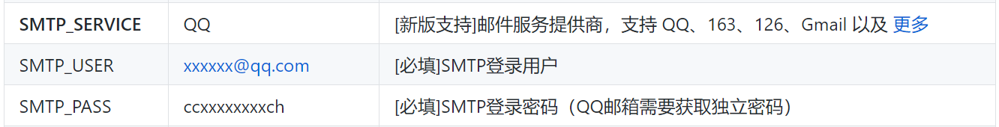
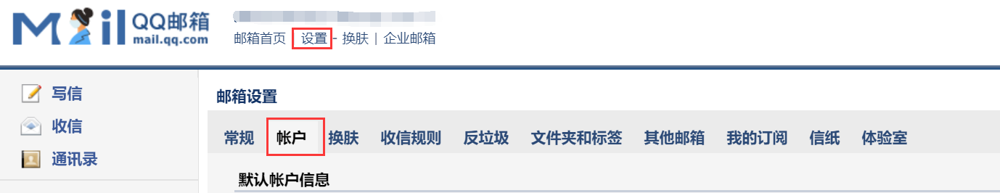
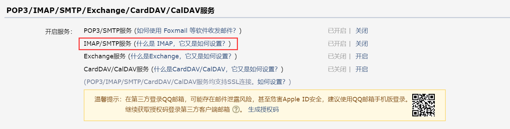
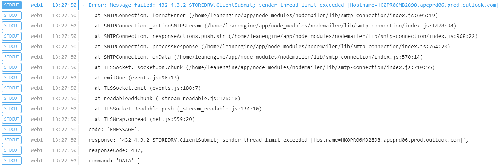
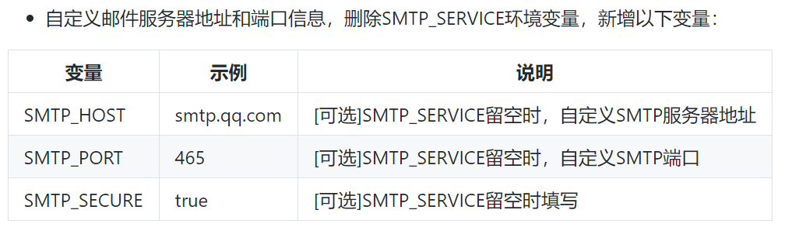
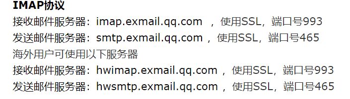
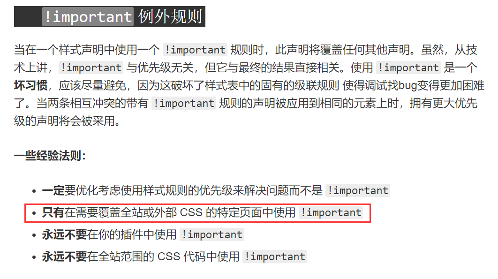
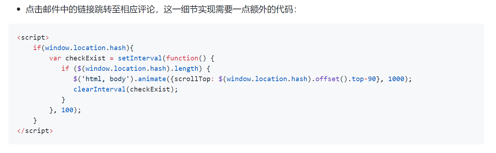

第三方评论系统血泪史
最后更新：2020年2月10日18:35
网站毫无疑问是需要评论系统的，但对于我这种只会一点点HTML和CSS的家伙来说，自己写是不可能的事情。于是就得借助第三方，前前后后试了5家，Gitment、Disqus、来必力、畅言、Valine。最后决定先用着Valine。这里简单谈谈各个评论系统的优劣以及重点说说Valine的设置方法。
网站毫无疑问是需要评论系统的，但对于我这种只会一点点HTML和CSS的家伙来说，自己写是不可能的事情。于是就得借助第三方，前前后后试了5家，Gitment、Disqus、来必力、畅言、Valine。最后决定先用着Valine。这里简单谈谈各个评论系统的优劣以及重点说说Valine的设置方法。
| 评论系统 | 匿名评论 | 国内SNS | 科学上网 | 域名备案 | 备注 |
|---|---|---|---|---|---|
| Gitment | × | × | × | × | 仅支持Github登录评论 |
| Disqus | √ | × | √ | × | 匿名评论藏得很深 |
| 来必力 | × | √ | √ | × | 不科学上网情况下极小概率能使用 |
| 畅言 | × | √ | × | √ | 用户必须使用SNS注册畅言账号后才能评论 |
SMTP的作用我也不是太清楚，大致上就是代发邮件的作用。（有进一步研究的必要）
涉及到SMTP的有三个环境变量
我先后使用了三家邮件平台，分别是QQ、outlook和腾讯企业版邮箱，一个个来说怎么配置。
进入QQ邮箱的设置，在帐户一栏找到IMAP/SMTP服务，开启
 获得的密码填入SMTP_PASS中，SMTP_SERVICE填QQ，SMTP_USER填这个QQ邮箱的地址
Outlook限制了SMTP方法一次性最大发送邮件数。当网站有评论被回复时，超出了这个限制，所以会造成被回复的用户无法收到邮件，但是站主是会收到有新评论的邮件的，LeanCloud报错信息如下。
目前我还没找到解决办法，所以请慎用Outlook邮箱提供SMTP服务。（我还是说下怎么设置）
换到企业邮箱的原因是支持域名邮箱，就是说我现在可以使用@sorapage.com后缀的邮箱来回复评论，虽然变化不大，但起码逼格还是高了那么一丢丢。
所以前提是你得有一个域名，还要有腾讯的企业邮箱，这个不是这篇文章的重点，可以自行Google。
根据腾讯和Valine指南，需要对上面三个参数进行下修改。
|  |  |
因此需要将SMTP_SERVICE拆成3个，也就说一共需要5个SMTP环境变量
有时候Valine的样式不适合页面的风格，改动起来其实也很简单。
先来复习一个CSS知识点，链接
所以解决办法就很清楚了，按F12调出控制台，找到你要改动的元素对应的class或id，在CSS加一句!important就完事。
还记得插件里说的这一段吗？
我相信肯定不止我一个在加上这段代码后发现还是行不通。
其实这段代码是需要jQuery的，在这段代码前再加一个script标签引入jQuery就行了。（不会JS的下场）
根据官方文档，重要的参数有三个
class为leancloud_visitors的父元素id作为数据库的查询条件，id为要查询页面的路径，比如当前这个页面的路径就是/aboutWebsite/skillTree/commentSystems/commentSystems.html
class为leancloud-visitors-count的子元素将被填充，填充值为从数据库获得的访问量值举个栗子
<span class="leancloud_visitors" id="/aboutWebsite/skillTree/commentSystems/commentSystems.html">
<strong>阅读量：</strong>
<strong class="leancloud-visitors-count"></strong>
</span>
上面的代码可以放在任何地方，显示的都是commentSystems.html这个页面的阅读量